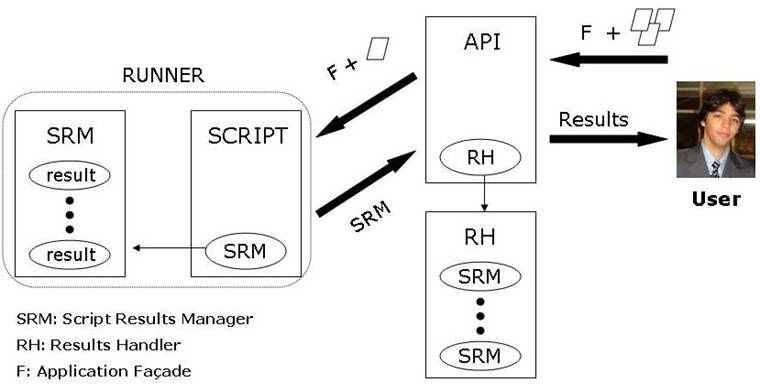

Version 0.13
July 1st, 2008
EasyAccept is a tool
developed to help development teams create acceptance tests. Such tests are
black box and aim to capture the functional requirements for a software system
as expressed by a client. A client is typically a non-IT person with a need to
be solved through a software system. EasyAccept is being developed with the
following requirements in mind:
In order to satisfy the
above requirements, the following decisions were taken:
COMMAND |
DESCRIPTION |
stringDelimiter |
Built-in command that changes the string delimiter to the given delimiter. By default, the string delimiter is ". |
expect |
Built-in command that is used to
check that a (business logic) command produced the expected result. |
expectDifferent |
Built-in command that is used to
check that a (business logic) command produced a result different from a
given string. |
expectWithin |
Built-in command that is used to
check that a (business logic) command produced the expected floating-point
result within a desired precision. |
expectError |
Built-in command that is used to
check error conditions of a (business logic) command. |
equalFiles |
Built-in command that compares two
files. |
stackTrace |
Built-in command that is used to
obtain a stack trace when debugging. This is useful when unexpected
exceptions occur and one wishes a stack trace to see what is happening. |
quit |
Built-in command to quit EasyAccept |
executeScript |
Built-in command that executes a
given script. The current script’s execution is paused until the new script
executes to completion. Either the current thread or a new thread taken from
the thread pool may be used to execute the new script. |
repeat |
Built-in command that is used to
repeat a given command’s execution a specific number of times. |
threadPool |
Built-in command that creates a
thread pool to execute scripts. |
echo |
Built-in command that returns the
concatenation of its parameters |
A script is written in a
text file. A command is written on a single line. A command is simply executed.
For example:
createUser key=key1 name="John Doe" birthdate=1957/02/04
will simply call the createUser
business method passing three parameters to it.
Special built-in commands
can be used to check that a (business logic) command worked correctly. For
example:
createUser key=key1 name="John Doe" birthdate=1957/02/04
expect "John Doe" getUserName key=key1
expectWithin .01 2345.67 getSalary key=key1
In the above, the first
line calls a business logic command. EasyAccept will accept that it has
functioned correctly if it does not produce an error (an Exception, in
programmer parlance). The next line also calls business logic (getUserName with parameter key1) but checks that it
returned the string “John Doe”. The third line checks that the salary is
correct, witha procesion of
one cent.
It is sometimes necessary
to obtain the result returned by a command in order to use it in the test
script. For example, suppose that the createUser command chooses a record key
internally (say a database OID) that is unknown to the tester. The following
script shows how to deal with the situation using variables (assuming that createUser
returns the chosen record key):
key=createUser name="John Doe" birthdate=1957/02/04
expect "John Doe" getUserName key=${key}
The syntax ${varName} is substituted by the variable's value.
The scope of a variable is
the set of scripts being executed, that is, from the time of variable
definition until the end of the current EasyAccept execution.
Here is another example
that checks whether two users with the same attributes generated different keys
in the database:
key1=createUser name="John Doe" birthdate=1957/02/04key2=createUser name="John Doe" birthdate=1957/02/04expectDifferent ${key1} echo ${key2}
A special built-in command
can be used to check that a (business logic) command produces an error (using
an exception). For example:
expectError "Unacceptable date." createUser name="John Doe" birthdate=1957/02/30
In the above line, a
business logic command is called (createUser).
EasyAccept will accept that it has functioned correctly if it produces an error
(an Exception, in programmer parlance) and if the Exception's error message is
"Unacceptable date."
When you want to use the
expect built-in command but the string to be checked is large, it may be better
to leave the string in a text file and have the business logic command produce
output in another file. Then, the built-in command equalFiles
can be used to check the command's output.
# this shows that John Doe existsexpect "John Doe" getUserName key=${key1}
produceReport key=${key1} outputFile=rep.txt
equalFiles file1=expected-report.txt file2=rep.txt
In the above example, the
command produceReport will produce a report
concerning John Doe and the report will be left in file rep.txt. The next line
checks that the rep.txt file is equal to the expected-report.txt file. This
last file (the expected report) should be produced beforehand (by hand, for
example) and should contain exactly the output desired for the produceReport command.
With EasyAccept
you can execute a script from within another. The current script’s execution
pauses until the new script executes to completion.
# runs the script script2.txt from within the current script using the
current thread
executeScript newThread=false scriptFile=script2.txt
If you want the new script’s
execution to be run in a new thread, you can flag the argument newThread with true. EasyAccept
takes a new thread from the thread pool, which must have been previously
created with the threadPool command.
threadPool poolSize=5
# runs the script script2.txt in a new thread taken from the thread pool
executeScript newThread=true scriptFile=script2.txt
When any command produces
an unexpected exception and you would like to examine a stack trace of the
situation that led to the exception, use the stacktrace
command as shown below.
# the following command produces an exceptionsomeCommand param=someValue
In this case, in order to
see details of the exception that was produced, temporarily use the following
command during debugging:
# the following command produces an exceptionstackTrace someCommand param=someValue
The repeat command can be used to
execute a given command a specific number of times. The quit command closes EasyAccept.
resetPlayerScore
# adds 6x200 points to the player’s score
repeat numberOfTimes=6
playerScores points=200
expect 1200 getPlayerScore
# quits EasyAccept
quit
A script resides in a file.
Each line consists of name=value pairs. The following are examples of
acceptable name=value pairs:
name=value
value
name=
name=""=value
In the second case, there
is no name; in the third case, the value is null; in the fourth case, the value
is empty; the fifth case is illegal.
In a line, the first
name-value pair represents a command to be executed (the value). If a name is
given, then that variable name will receive the value returned by the command.
The command must match a method available in the business logic. Parameters are
passed as given in the other name=value pairs. In reality, since Java does not
provide parameter names through reflection, the order of the parameters in the
test must match the order in the business logic. The names themselves (to the
left of the = sign) are not used and serve only as documentation in the tests. Remember
that the parameter order is important. A method appropriate to the
parameter types given will be found in the business logic. The following
parameter types are acceptable and automatic conversion will be provided from a
string to the parameter value of appropriate type:
A line starting with # is a
comment. The line continuation character is \. A \ character itself must be
given as \\.
The default string delimiter
is ". This may be changed (see below).
EasyAccept has several
built-in commands used to perform special testing actions. They are described
below.
echo any string
This command returns the
concatenation of its arguments. It is typically used to examine command
results, variable names, etc.
equalfiles OKfile fileToTest
This command is a test of
file contents. It receives two files, and the test passes if the two files have
identical contents. By convention, the first file contains the correct
(expected) output and the second file contains the file to be tested. This
command is typically used after a business logic command that has produced its
output in a file. There are two ways of using equalfiles
command:
1) With Relative path
(relative to directory where EasyAccept is executed)
equalfiles ./src/easyaccept/script/test/script1.txt ./src/easyaccept/script/test/script1.txt
2) With AbsolutePath:
equalfiles c:/projetos/script1.txt c:/script2.txt
expect expectedString businessLogicCommand paramName=paramValue ...
This command executes the businessLogicCommand passing the specified parameters. The businessLogicCommand must return a string which is compared
with expectedString. The test passes if the strings
are equal. No errors (exceptions) may occur.
expectDifferent stringNotExpected businessLogicCommand paramName=paramValue ...
This command executes the businessLogicCommand passing the specified parameters. The businessLogicCommand must return a string which is then
compared with expectedString. The test passes if the
strings are different. No errors (exceptions) may occur.
expectError expectedErrorString businessLogicCommand paramName=paramValue ...
This command executes the businessLogicCommand passing the specified parameters. The businessLogicCommand must return an error (produce an
exception, in Java) using an error string. This string is compared with expectedErrorString. The test passes if the strings are
equal. If no exceptions are thrown, the test does not pass.
expectWithin precision expectedValue businessLogicCommand paramName=paramValue ...
This command executes the businessLogicCommand passing the specified parameters. The businessLogicCommand must return a value of type double
which is compared with expectedValue. The test passes
if the values are equal, within the given precision. No errors (exceptions) may
occur.
stackTrace <any other command, including built-in commands>
This command executes the
command indicated and, if an exception is thrown, a full stack trace is
printed. This is useful for debugging and will not normally be used permamently in scripts.
stringDelimiter delimiter_character
This command changes the
string delimiter to the given character. By default, the string delimiter is
".
quit
This command ends
EasyAccept execution.
executeScript
executeScript newThread scriptFile
This command is used to
execute a script from within another. The new script can either be executed in
a new thread (first parameter=”true”) or using the current script’s thread
(first parameter=”false”). The new script is executed using a subroutine return
mechanism.
repeat
repeat numberOfTimes anyCommand
This command is used to
execute a script command a given number of times.
threadPool
threadPool poolSize
This command creates a
thread pool with a definite pool size that EasyAccept uses to execute scripts
concurrently..
In order to expose the
business logic of your program, you must write a façade. EasyAccept will
instantiate the façade once and all public methods contained in the façade will
be callable from a test script. Remember to separate the business logic from
the user interface. Your façade should not print anything anywhere. It should
communicate itself with the outside by accepting parameters, returning results
or throwing exceptions. Parameters and return values cannot be objects.
To execute the acceptance tests
two approaches are presented below. The first one, using the EasyAccept API,
gives the user more flexibility when running tests and obtaining its results.
It is even possible subscribe applications as test failures listener (see the
EasyAccept API subsection for more details). The second approach is focused on
users that do not want the test execution full control. See below how to
execute testes.
1) Use the EasyAccept API:
The user needs to import
EasyAccept and use its API (Application Programming Interface). See below how to use
the tool to test an application when using a simple client class:
================================================================================================================
import java.util.ArrayList;
import java.util.List;
import easyaccept.EasyAcceptFacade;
public class TestClient {
public static void main(String[] args) throws
Exception {
List<String> files = new
ArrayList<String>();
//Put
the testScript1 file into the "test scripts"
list
files.add("testScript1.txt");
//Put
the testScript2 file into the "test scripts"
list
files.add("testScript2.txt");
//Instantiate
your software façade
TestFacade yourTestFacade = new TestFacade();
//Instantiate EasyAccept façade
EasyAcceptFacade eaFacade = new
EasyAcceptFacade(yourTestFacade, files);
//Execute the tests
eaFacade.executeTests();
//Print
the tests execution results
System.out.println(eaFacade.getCompleteResults());
}
}
===============================================================================================================
2) Use the following
syntax:
java -classpath ... easyaccept.EasyAccept <FacadeClass> <scriptFile> [<scriptFile>] ...
where:
An EasyAccept exit code of 0 implies
that all tests have passed.
EasyAccept API
The tool Application
Programming Interface (API) gives the user more
flexibility when testing an application. See below all the EasyAccept API
operations with the description of each one.
0PERATION |
DESCRIPTION |
|
executeTests |
Execute the tests |
|
getCompleteResults |
Returns all the test scripts
complete results. The complete results describe: the number of passed tests,
the number of not passed tests and the test failures descriptions (if they
occur). |
|
getScriptCompleteResults |
Returns the complete results for
the specified test script. The complete results describe: the number of
passed tests, the number of not passed tests and the test failures
descriptions (if they occur). |
|
getSummarizedResults |
Returns all test scripts
summarized results. The summarized results describe: the number of passed
tests and the number of not passed tests. |
|
getScriptSummarizedResults |
Returns the summarized results for
the specified test script. The summarized results describe: the number of
passed tests and the number of not passed tests. |
|
getScriptResults |
Returns a list with all the
results of a specified test script. Each test result is a “result.Result”
object (each executed test script line has a related “result.Result” object). |
|
getLineResult |
Returns a specified script line
result. The test result is a “result.Result” object (each executed test
script line has a related “result.Result” object). |
|
getTotalNumberOfPassedTests |
Returns the number of passed
tests. |
|
getTotalNumberOfNotPassedTests |
Returns the number of not passed
tests. |
|
getScriptNumberOfPassedTests |
Returns the number of passed tests
of a specified test script. |
|
getScriptNumberOfNotPassedTests |
Returns the number of not passed
tests of a specified test script. |
|
getTotalNumberOfTests |
Returns the total number of
executed tests. |
|
getScriptTotalNumberOfTests |
Returns the total number of
executed tests of a specified test script. |
|
getScriptFailures |
Returns the test failures (if they
occur) for the specified test script. |
|
addFailureListener |
Adds a failure listener to be
notified when failure events occur. |

Figure 1: EasyAccept architecture